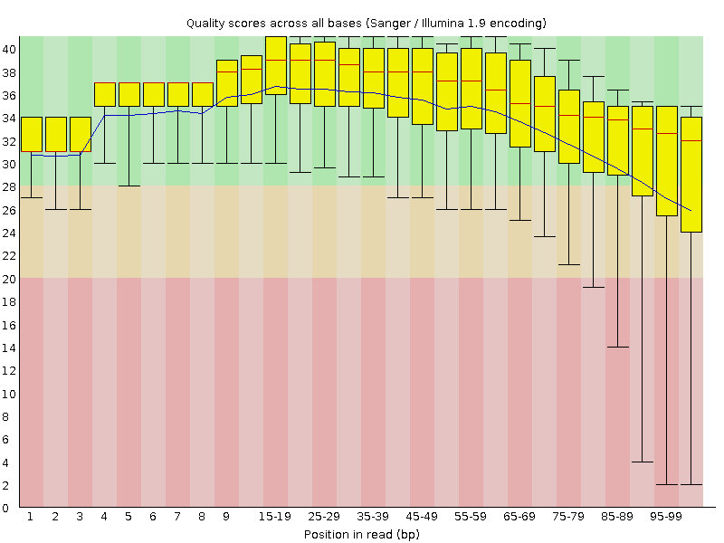
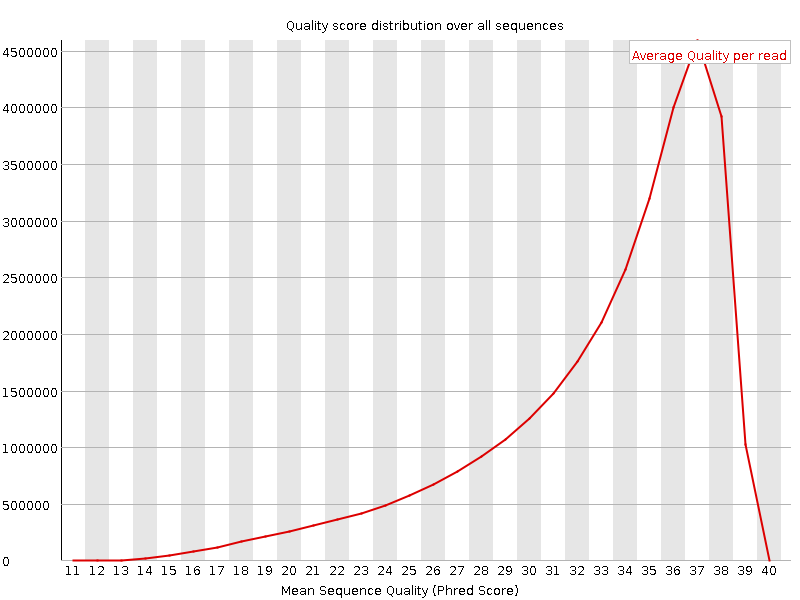
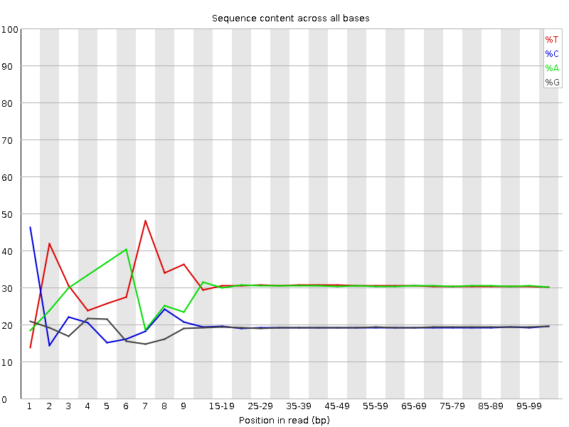
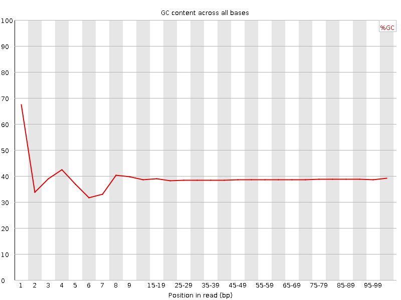
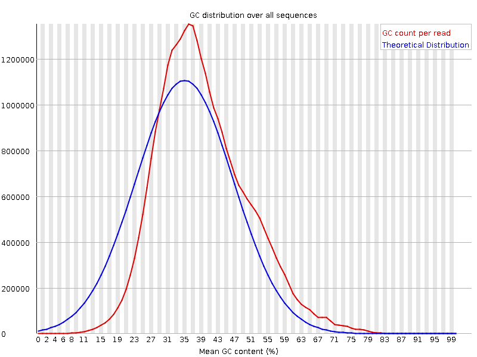
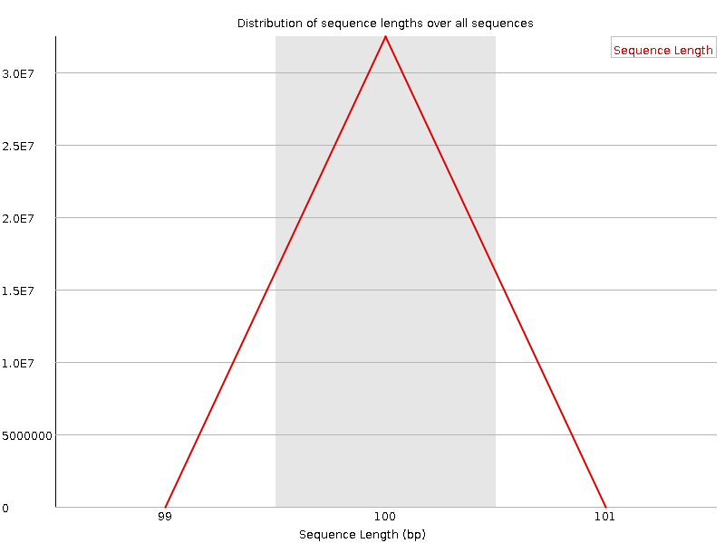
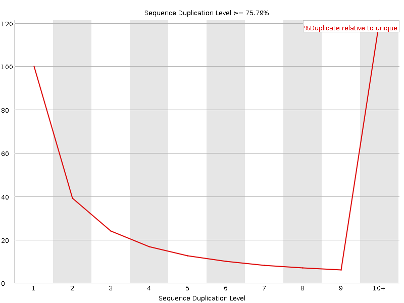
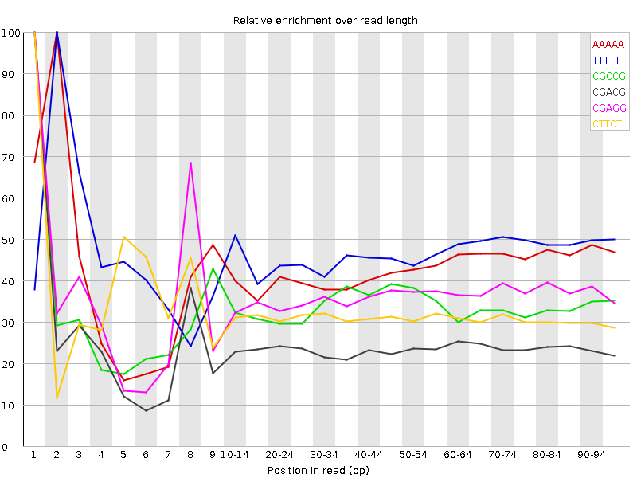

![[OK]](Icons/tick.png) Basic Statistics
Basic Statistics
| Measure | Value |
|---|---|
| Filename | t6.2.fq |
| File type | Conventional base calls |
| Encoding | Sanger / Illumina 1.9 |
| Total Sequences | 32476047 |
| Filtered Sequences | 0 |
| Sequence length | 100 |
| %GC | 38 |
Per base sequence quality

Per sequence quality scores

![[FAIL]](Icons/error.png) Per base sequence content
Per base sequence content

Per base GC content

![[WARN]](Icons/warning.png) Per sequence GC content
Per sequence GC content

Per base N content

Sequence Length Distribution

Sequence Duplication Levels

Overrepresented sequences
No overrepresented sequences
Kmer Content

| Sequence | Count | Obs/Exp Overall | Obs/Exp Max | Max Obs/Exp Position |
|---|---|---|---|---|
| AAAAA | 20113485 | 2.484734 | 5.794127 | 2 |
| TTTTT | 20180140 | 2.3909252 | 5.109313 | 2 |
| CGCCG | 1702370 | 1.9359766 | 5.707247 | 1 |
| CGACG | 2608410 | 1.9155272 | 7.985837 | 1 |
| CGAGG | 2541680 | 1.8976935 | 5.20345 | 1 |
| CTTCT | 6350440 | 1.8347344 | 5.767132 | 1 |
| CGGCG | 1521840 | 1.7595752 | 5.422006 | 1 |
| CGCGG | 1439980 | 1.6649275 | 5.8014407 | 1 |
| CTCGA | 3536260 | 1.6356869 | 8.745998 | 1 |
| CGAGA | 3364395 | 1.5954597 | 5.540674 | 1 |
| CTGGA | 3390620 | 1.5945122 | 6.946378 | 1 |
| CTTCC | 3528430 | 1.5918959 | 5.5915737 | 1 |
| CTTTT | 8488595 | 1.5705124 | 7.042614 | 1 |
| CTCCA | 3433900 | 1.5622517 | 7.5950036 | 1 |
| CGCGA | 2117675 | 1.5551484 | 5.997618 | 1 |
| CAAAA | 8053885 | 1.5407482 | 5.1341443 | 1 |
| ATCGA | 4970510 | 1.4846474 | 5.3611336 | 6 |
| CTCGT | 3223480 | 1.4786005 | 7.9479957 | 1 |
| CTTCG | 3203985 | 1.4696581 | 6.9593663 | 1 |
| CGCCA | 2024000 | 1.4619427 | 5.6282544 | 1 |
| CGATC | 3158475 | 1.4609436 | 5.1081734 | 4 |
| CGAAG | 3070905 | 1.4562812 | 5.4292197 | 1 |
| CTTTC | 5007115 | 1.4466283 | 5.0360966 | 1 |
| CCGGC | 1254100 | 1.426193 | 5.2171445 | 1 |
| CTTCA | 4875665 | 1.4204743 | 6.0906954 | 1 |
| CTGGC | 1940080 | 1.4128693 | 5.285551 | 1 |
| CTCCT | 3047805 | 1.3750559 | 5.348367 | 1 |
| CTCGG | 1874995 | 1.3654709 | 8.407185 | 1 |
| CTCGC | 1900430 | 1.3612614 | 6.7079873 | 1 |
| CGAAA | 4284785 | 1.2905699 | 5.651988 | 1 |
| GAATC | 4208720 | 1.2571075 | 5.3108134 | 4 |
| CTTGG | 2688270 | 1.2536936 | 6.09903 | 1 |
| CTTTG | 4257010 | 1.2504512 | 5.760382 | 1 |
| CTTGA | 4180965 | 1.2384223 | 5.624615 | 1 |